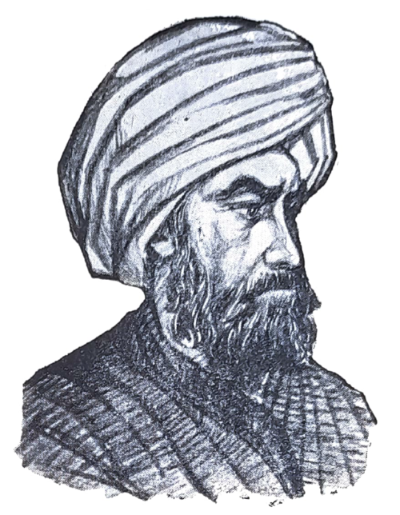
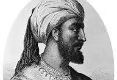

تاريخ من الفخر
-

طارق بن زياد
الدور: قائد الفتح الإسلامي للأندلس الإنجاز: قاد الجيش الذي عبر المضيق وسحق القوط في معركة وادي لكة اللقب: بطل الفتح أشهر مقولته: "البحر من ورائكم والعدو من أمامكم"
-
عبدالعزيز بن موسى بن نصير
عبد العزيز كان من القادة الذين ساهموا في توسيع الأراضي الإسلامية في الأندلس، وبناء المساجد وتأسيس إدارة إسلامية في المنطقة. يعتبر أول من أسس الحاكمية الإسلامية في الأندلس بعيدًا عن الفتوحات العسكرية، حيث عمل على تطبيق النظام الإداري والتنظيمي الإسلامي.
-
السمح بن مالك الخولاني
السمح بن مالك الخولاني شارك في معركة وادي لكة (711م)، وكان من القادة العسكريين الذين ساعدوا في فتح الأندلس بقيادة طارق بن زياد وموسى بن نصير. تولى قيادة الجيش الإسلامي في بعض المناطق الغربية من الأندلس، وكان له دور كبير في تسهيل التقدم الإسلامي بعد الفتح الأولي.
-

عبد الرحمن الداخل (صقر قريش)
الفرار إلى الأندلس: بعد الانقلاب العباسي الذي حدث في عام 750م (132 هـ)، والذي أدى إلى سقوط الدولة الأموية في دمشق، تمكن عبد الرحمن الداخل من الفرار إلى الأندلس، وكان قد نجا من القتل أثناء المجزرة التي ارتكبها العباسيون ضد أفراد الأسرة الأموية. تأسيس الدولة الأموية في الأندلس: بعد وصوله إلى الأندلس في عام 755م، وجد عبد الرحمن الداخل نفسه في مواجهة مع القوى المحلية التي كانت تتنافس على السلطة في الأندلس.
-

هشام بن عبد الرحمن الداخل
الخلافة: تولى هشام بن عبد الرحمن الداخل الخلافة في الأندلس بعد والده عبد الرحمن الداخل، الذي أسس الدولة الأموية في الأندلس بعد الفرار من المجزرة العباسية. تحديات الحكم: جاء حكم هشام بعد تأسيس دولة الأندلس، وكان عليه مواجهة عدة تحديات داخلية وخارجية. من أبرز تلك التحديات كان مقاومة الثورات الداخلية من بعض القبائل والمناطق التي كانت تسعى للتمرد على الحكم الأموي.
أبو عبد الله الصغير
توليه الحكم: تولى أبو عبد الله الصغير العرش في عام 1482م (887 هـ)، وكان حينها في سن صغير. الواقع السياسي: كان حكمه في فترة صعبة للغاية؛ حيث كانت الملكيتان الكاثوليكيتان في إسبانيا (إيزابيلا وفرديناند) تتقدمان في حرب استعادة الأندلس، وكانت غرناطة محاصرة.